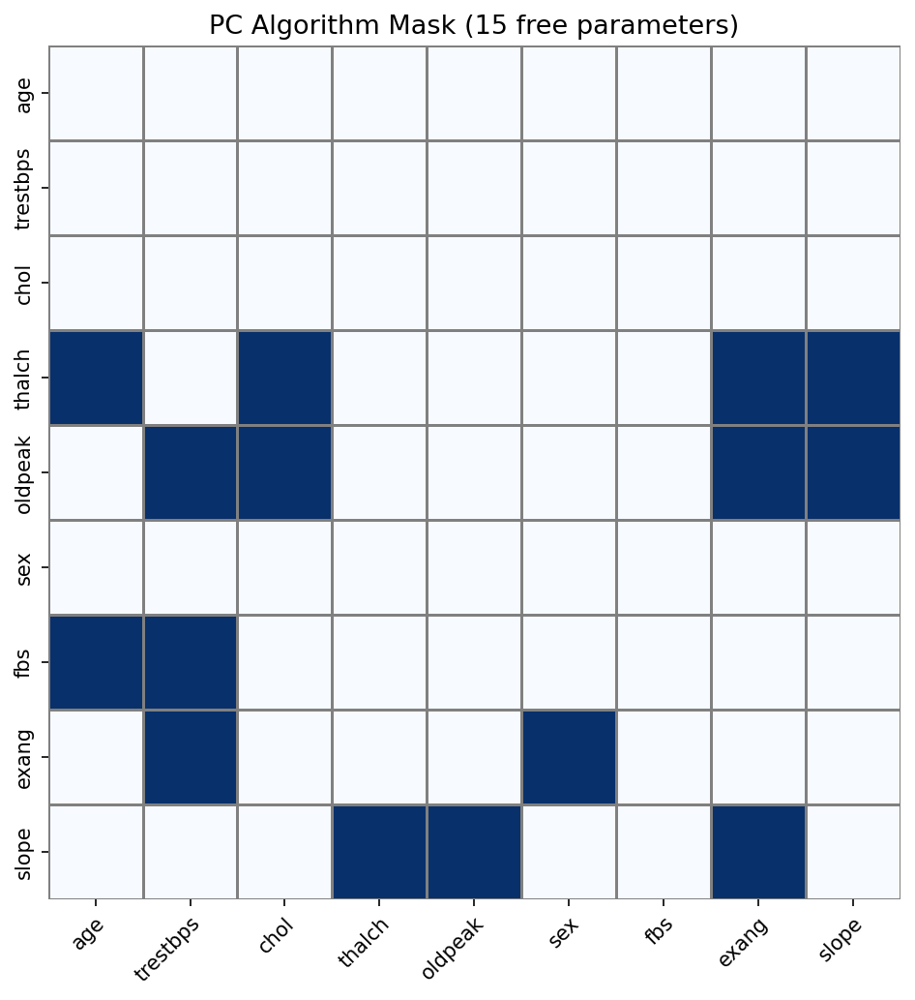
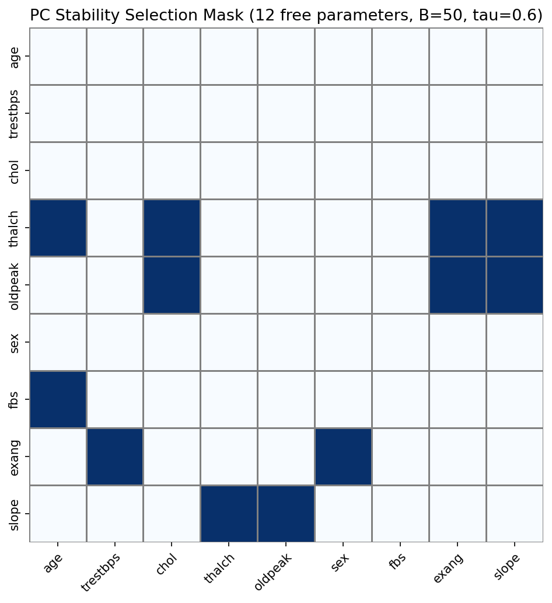
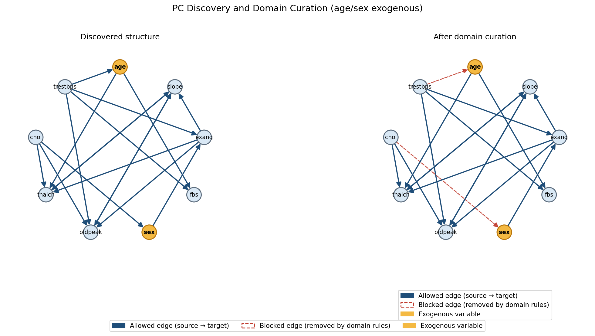
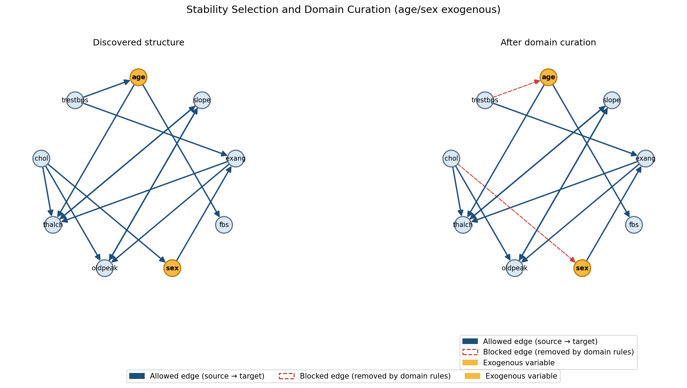
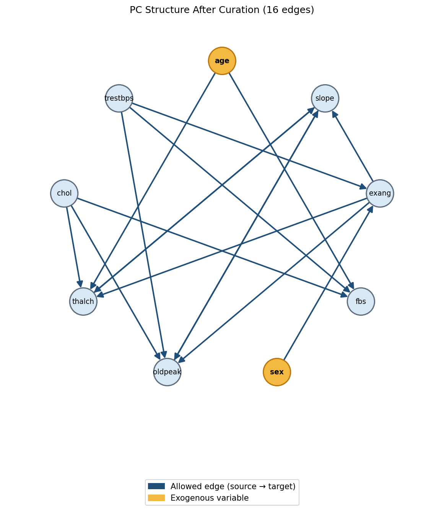
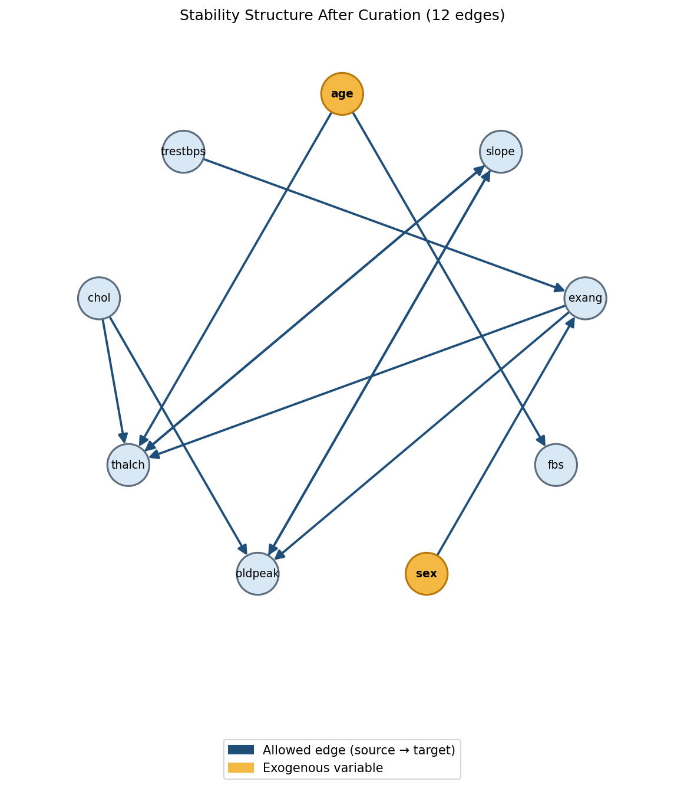

Experiment 2 — Data-driven mask visualizations
531 samples · PC α=0.05 · age/sex exogenous · masks discovered on full data
Final mask heatmaps (used in CV)

PC algorithm — 15 free parameters

PC stability selection — 12 free parameters (B=50, τ=0.6)
Discovery → domain curation

PC: discovered structure vs after blocking incoming edges to age/sex (red dashed = removed)

Stability: 14 edges discovered → 12 after curation
Final directed graphs

PC structure — 15 edges · gold = exogenous (age, sex)

Stability structure — 12 edges